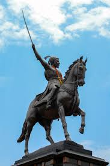
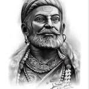
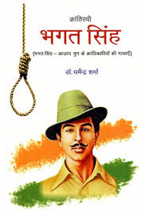
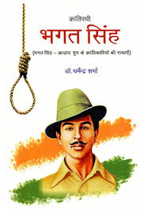

_About_Two_Heroes_
_Shivaji_Maharaj.The_real_hero_

Shivaji Maharaj, born on February 19, 1630, was a prominent Indian warrior king and a member of the Bhonsle
Maratha clan. He established the Maratha Empire by carving out an independent kingdom from the dwindling
Adilshahi sultanate of Bijapur. Known for his military and administrative skills, Shivaji Maharaj employed
innovative guerilla warfare tactics and built a strong navy. He was officially crowned Chhatrapati at Raigad
Fort in 1674. His reign was marked by conflict with the Mughal Empire, the Sultanate of Golkonda, and the
Sultanate of Bijapur, as well as European colonial powers. He is remembered as a visionary leader, a just ruler,
and a symbol of bravery and independence.

Here's a more detailed look at his life and contributions:
Early Life and Rise to Power:
Shivaji was born in Shivneri Fort near Pune, Maharashtra.
He received military and administrative training from a young age.
At 16, he captured his first fort, Torna, marking the beginning of his territorial expansion, according to
Vedantu.
By 1647, he had gained control of Poona and started building his own kingdom.
Military Achievements:
Shivaji was a master of guerrilla warfare, using swift attacks and strategic retreats to his advantage,
according to Vedantu.
He captured key forts like Raigad, Sinhagad, and Purandhara, expanding his influence in western India.
His victory over Afzal Khan, a Bijapur general, solidified his reputation as a skilled military leader,
according to BYJU'S.
He also established a strong naval force to protect his kingdom's coasts.
Administrative Reforms:
Shivaji implemented a well-structured legal system and administrative framework.
He promoted the use of Marathi and Sanskrit in his court and administration, replacing Persian.
He focused on religious tolerance and ensured justice for all his subjects, according to Shivaji College.
Conflict with the Mughals:
Shivaji's rise challenged the authority of the Mughal Empire, particularly under Aurangzeb.
He engaged in numerous battles with the Mughals, employing guerrilla tactics to defend his territories.
His escape from Agra after being imprisoned by Aurangzeb demonstrated his cunning and determination.
Legacy:
Shivaji Maharaj was crowned Chhatrapati in 1674, solidifying his authority and establishing the Maratha Empire.
He is remembered as a visionary leader who fought for the freedom and dignity of his people.
His legacy continues to inspire generations with his courage, leadership, and commitment to justice.
_Bhagat_Singh_Ji_
 

Bhagat Singh was a prominent Indian revolutionary and freedom fighter who fought for India's independence from
British rule. He was born on September 28, 1907 and was hanged on March 23, 1931 at the age of 23. Bhagat Singh
is also known as "Shaheed-e-Azam". He was a young, passionate and influential leader who played an important
role in the Indian freedom struggle.
Revolutionary:
Bhagat Singh was a vocal opponent of British rule and advocated achieving independence through armed struggle.
Socialist:
He believed in a Marxist ideology and wanted to establish a socialist system in India.
Freedom Fighters:
Bhagat Singh participated in many struggles for India's independence, including the Lahore Conspiracy Case .
Martyr:
Bhagat Singh was hanged on March 23, 1931, after which he was given the status of martyr.
Popularity:
Bhagat Singh's martyrdom inspired the youth of India to join the freedom struggle and he remains a source of
inspiration even today.